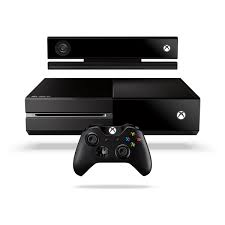
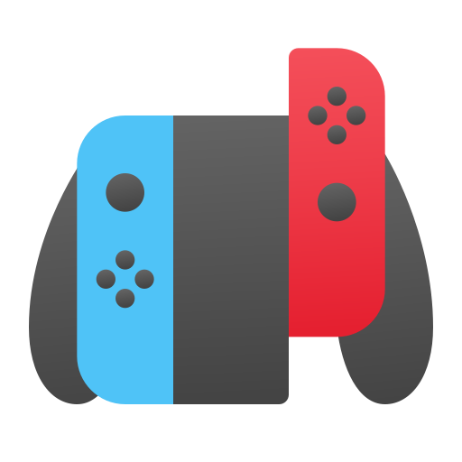
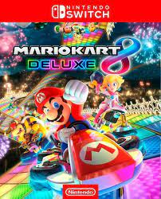
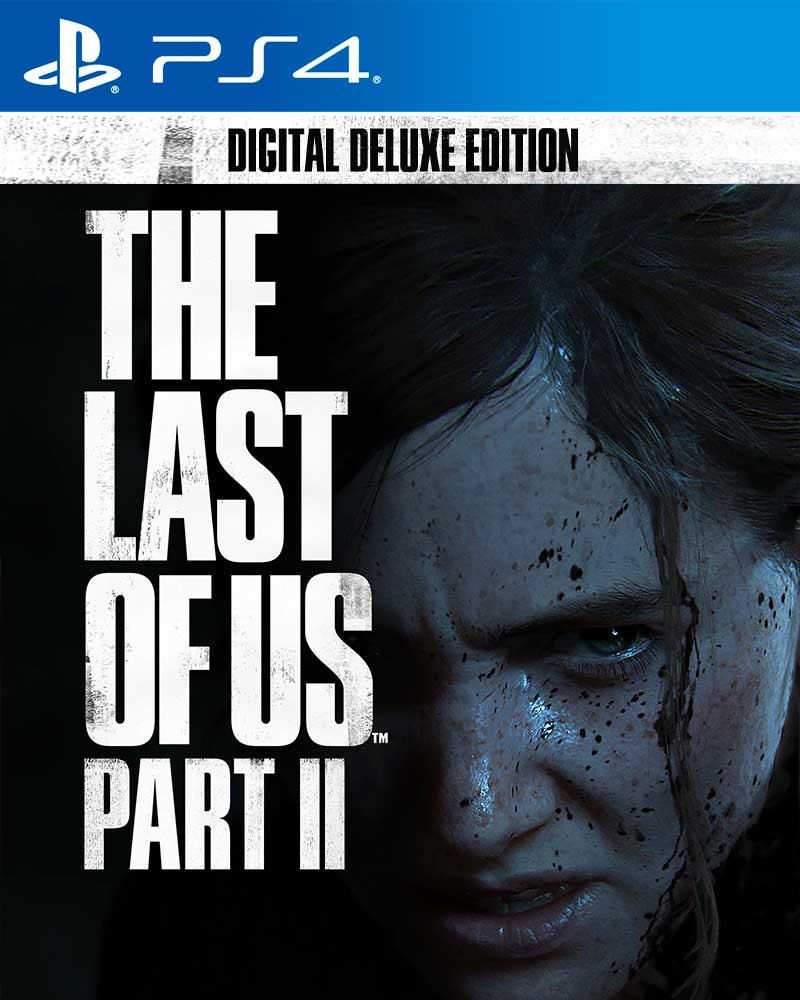

|
Tu destino confiable para productos de entretenimientos de alta calidad. Protege lo que compras con nuestras garantias de mas de 2 años |
Atención excepcional en cada paso. Nuestro compromiso es brindarte un servicio al cliente personalizado y de primera clase en cada visita. |
Sumérgete en el emocionante mundo de los juegos y videojuegos en nuestra tienda. Descubre una amplia selección de títulos, consolas y accesorios para satisfacer tu pasión por el gaming.. |
PS5Consola de videojuegos de última generación de Sony. Ofrece una experiencia de juego inmersiva con gráficos de alta calidad, velocidades de carga ultrarrápidas y una amplia biblioteca de títulos emocionantes. |

XboxONEConsola de videojuegos de Microsoft que ofrece entretenimiento y experiencias de juego de alta calidad. Con una gran variedad de juegos, servicios en línea y aplicaciones multimedia, |

Nintendo SWITCHConsola de videojuegos híbrida que combina la experiencia de juego en casa y en movimiento. Ofrece una amplia gama de juegos exclusivos de Nintendo y la posibilidad de jugar en modo portátil o en el televisor. |
| Articulos | Testimonio
"¡Mario Kart 8 es puro caos y diversión en cuatro ruedas! Las carreras frenéticas, los personajes adorables y los power-ups locos hacen que cada partida sea una fiesta. ¡No puedo dejar de jugarlo!" "The Last of Us Part II me llevó a un viaje emocional inolvidable. La historia es intensa y los personajes son increíblemente profundos. Nunca había experimentado un juego que me hiciera sentir tanto. Es una obra maestra de la narrativa y la acción." -Pepito Grillos |
|
|---|---|---|
|  | Mario Kart 8 es un popular juego de carreras de la franquicia de Mario Kart de Nintendo. Ofrece una experiencia de carreras emocionante y divertida con personajes icónicos de Nintendo al volante de karts personalizables. El juego incluye una amplia variedad de pistas creativas y emocionantes, power-ups únicos y modos de juego multijugador que lo convierten en un título perfecto para disfrutar en familia o con amigos. | |
|  | "The Last of Us Part II" es un videojuego de acción y aventuras desarrollado por Naughty Dog y publicado por Sony Interactive Entertainment. Es la secuela del exitoso juego "The Last of Us". La historia sigue a Ellie, una joven superviviente en un mundo postapocalíptico infestado de infectados, mientras busca venganza en un viaje emocional y peligroso. |
| Contacto | Nuestra Tienda | Libro de reclamaciones |
| +51 997336599 | Centro comercial Mall Aventura Plaza Puruchuco |